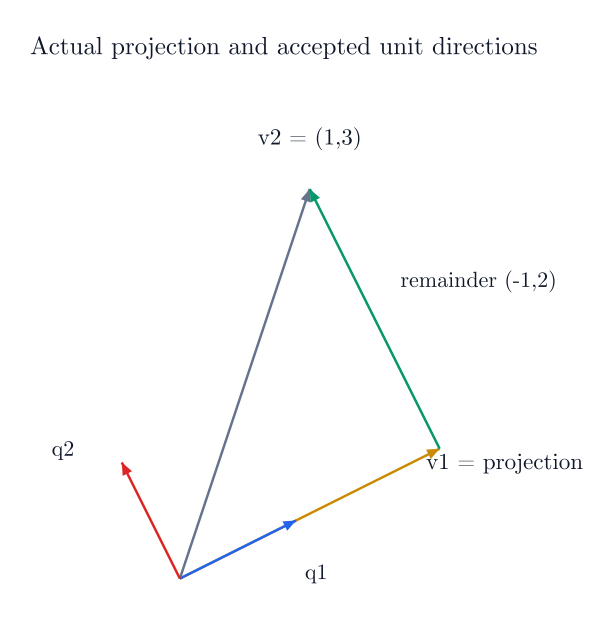
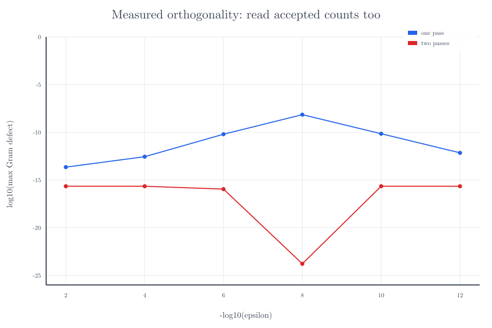
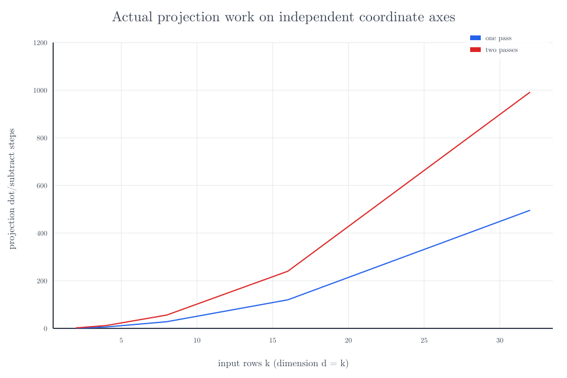
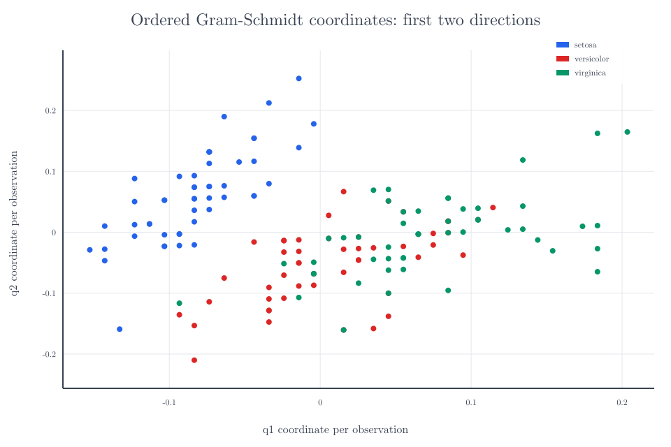

Gram–Schmidt: subtract overlap, measure what remains
Abstract
Given overlapping directions, we want unit directions whose coordinates can be read through dot products. Exact arithmetic permits a basis with the same span, but rounding and small residuals complicate this construction. Modified Gram–Schmidt subtracts each projection from the current residual. This report follows actual native projection states for the original two-dimensional example, derives the exact invariants and operation counts, and measures threshold and conditioning effects. A separately selected second pass illustrates reorthogonalization. Finally, four centered Iris measurement columns provide an order-dependent orthogonal representation of the observations.
Begin with the original two vectors
Let \(v_1=(2,1)\) and \(v_2=(1,3)\). In exact arithmetic,
Here the projection of \(v_2\) coincides with \(v_1\). The diagram draws that shared segment once in gold. The green translated segment shows the remainder, and the two short unit arrows show the accepted directions. The table prints the actual floating-point coefficient and states, without claiming their rounded dot product is exactly zero.
#include <dm/dm.hpp>
int main() {
std::filesystem::create_directories("build");
const auto t = dm::algorithms::gram_schmidt_trace({{2, 1}, {1, 3}});
const auto &p = t.projections.at(0);
const auto &q = t.run.basis;
std::print("| accepted row | x | y |\n| ---: | ---: | ---: |\n");
for (std::size_t i = 0; i < q.size(); ++i)
std::print("| {} | {:.17g} | {:.17g} |\n", i, q[i][0], q[i][1]);
std::print("\nActual coefficient {:.17g}; residual ({:.17g}, {:.17g}); residual norm {:.17g}.\n",
p.coefficient, p.after[0], p.after[1], t.rows[1].norm);
dm::dstruct::DataFrame::MarkdownOptions format;
format.scientific = {"max_gram_error", "relative_projection_residual"};
format.digits = 8;
std::print("\n{}\n",
dm::algorithms::gram_schmidt_quality({{2, 1}, {1, 3}}, q).to_md(
format));
const double px = p.coefficient * q[0][0], py = p.coefficient * q[0][1];
dm::graphics::Diagram d(130, 1000);
dm::graphics::DiagramStroke gray;
gray.arrow = true;
gray.width = 2.5;
gray.color = {100, 116, 139};
auto gold = gray;
gold.color = {202, 138, 4};
auto green = gray;
green.color = {5, 150, 105};
auto blue = gray;
blue.color = {37, 99, 235};
auto red = gray;
red.color = {220, 38, 38};
d.path({{0, 0}, {p.before[0], p.before[1]}}, gray).path({{0, 0}, {px, py}},
gold).path(
{{px, py}, {p.before[0], p.before[1]}}, green).path(
{{0, 0}, {q[0][0], q[0][1]}}, blue).path({{0, 0}, {q[1][0], q[1][1]}},
red).text({1, 3.4},
"v2 = (1,3)", 23).text({2.5, .9}, "v1 = projection", 23).text({2.3, 2.3}, "remainder (-1,2)", 22).text({1.05, .05}, "q1", 22).text({-.9, 1}, "q2", 22).text({.8, 4.1}, "Actual projection and accepted unit directions", 25).save_svg("build/gram_projection.svg");
if (q.size() != 2 || p.input_row != 1 || p.basis_row != 0)
throw std::runtime_error("original pair");
}| accepted row | x | y |
|---|---|---|
| 0 | 0.89442719099991586 | 0.44721359549995793 |
| 1 | -0.44721359549995793 | 0.89442719099991586 |
Actual coefficient 2.2360679774997898; residual (-1, 2); residual norm 2.2360679774997898.
| inputs | dimension | accepted | max_gram_error | relative_projection_residual |
|---|---|---|---|---|
| 2 | 2 | 2 | 1.11022302e-16 | 0.00000000e+00 |

Derive the exact process, then identify the computed one
For input vector \(v_j\), start with \(u^{(0)}=v_j\). Modified Gram–Schmidt uses the current residual, rather than the unchanged original vector, for each coefficient:
If previous directions satisfy \(q_i^Tq_l=\delta_{il}\), subtraction makes \(q_i^Tu^{(i)}=0\), while preserving zero overlap with earlier directions. Induction proves orthogonality in exact arithmetic. Each subtraction changes a vector only by an existing basis combination; adding a nonzero residual therefore preserves the processed span. An exactly zero residual signals exact dependence in this model.
The implementation uses sequential double dot products and \(\sqrt{\sum u_i^2}\), then accepts only a computed norm strictly above an absolute tolerance, default \(10^{-12}\). Its ordinary API uses one projection pass. Finite-precision residuals need not be exactly orthogonal, and threshold rejection is not a proof of exact dependence. Rescaling or reordering inputs can change the accepted count. Even a dependent row can leave rounding noise, especially with a zero or overly small threshold.
The new run/trace APIs can select two full modified projection passes before normalization. The second pass removes overlap left by the first against the same accepted directions. It costs extra dots and updates; it is not a rank-revealing factorization or an unconditional orthogonality guarantee. No pivoting, relative threshold or scaled norm is silently substituted for the original loop.
Separate absolute scale from conditioning
Two independent coordinate axes with norm below the default threshold are both discarded. The represented subspace is still two-dimensional mathematically. For an ill-conditioned example, use the three independent rows \((1,\varepsilon,0,0)\), \((1,0,\varepsilon,0)\), \((1,0,0,\varepsilon)\). Their directions become nearly parallel as \(\varepsilon\) shrinks. The following table reports accepted counts beside the maximum Gram defect,
A small defect for a small accepted set does not certify that all input directions were retained. The diagnostic itself uses ordinary double dot products and can underreport errors through rounding. Values below machine precision are measured cancellation artifacts, not a certificate of that many accurate digits. Independent high-precision checks evaluate the stored basis separately. The plot uses only strictly positive measured defects; a computed zero is reported in the table and omitted from the logarithmic curve without a floor.
#include <dm/dm.hpp>
int main() {
std::filesystem::create_directories("build");
std::print("| epsilon | passes | accepted | max Gram defect | projection residual ratio |\n| ---: | " "---: | ---: | ---: | ---: |\n");
std::vector<double> x1, y1, x2, y2;
for (double eps : {1e-2, 1e-4, 1e-6, 1e-8, 1e-10, 1e-12, 1e-13}) {
const auto v = dm::algorithms::gram_schmidt_near_parallel(eps);
for (unsigned passes : {1u, 2u}) {
dm::algorithms::GramSchmidtOptions o;
o.passes = passes;
const auto r = dm::algorithms::gram_schmidt_run(v, o);
const auto quality =
dm::algorithms::gram_schmidt_quality(v, r.basis);
const double error =
quality.get_column<double>("max_gram_error").values()[0], residual = quality.get_column<double>("relative_projection_residual").values()[0];
std::print("| {:.0e} | {} | {} | {:.12e} | {:.12e} |\n", eps,
passes, r.basis.size(), error, residual);
if (error > 0) {
(passes == 1 ? x1 : x2).push_back(-std::log10(eps));
(passes == 1 ? y1 : y2).push_back(std::log10(error));
}
}
}
std::print("\nScale control: unit axes retain {}; axes scaled by 1e-13 retain {}.\n",
dm::algorithms::gram_schmidt({{1, 0}, {0, 1}}).size(),
dm::algorithms::gram_schmidt({{1e-13, 0}, {0, 1e-13}}).size());
auto p = dm::graphics::RPlot::create();
p.line(x1, y1, "one pass", {37, 99, 235}, 2).points(x1, y1, "",
{37, 99, 235}, 4).line(
x2, y2, "two passes", {220, 38, 38}, 2).points(x2, y2, "",
{220, 38, 38}, 4).title(
"Measured orthogonality: read accepted counts too").x_label(
"-log10(epsilon)").y_label("log10(max Gram defect)").y_limits(-26, 0).save_svg("build/gram_conditioning.svg");
}| epsilon | passes | accepted | max Gram defect | projection residual ratio |
|---|---|---|---|---|
| 1e-02 | 1 | 3 | 2.237793284010e-14 | 2.583812492711e-14 |
| 1e-02 | 2 | 3 | 2.220446049250e-16 | 2.220482032605e-16 |
| 1e-04 | 1 | 3 | 2.773646790759e-13 | 3.202731362383e-13 |
| 1e-04 | 2 | 3 | 2.220446049250e-16 | 2.668832189744e-20 |
| 1e-06 | 1 | 3 | 6.286220533177e-11 | 7.258702234018e-11 |
| 1e-06 | 2 | 3 | 1.110223024625e-16 | 6.409875621299e-17 |
| 1e-08 | 1 | 3 | 7.071067811865e-09 | 8.164965809277e-09 |
| 1e-08 | 2 | 3 | 1.654361225106e-24 | 1.850369696752e-24 |
| 1e-10 | 1 | 3 | 7.071067811865e-11 | 8.164965809277e-11 |
| 1e-10 | 2 | 3 | 2.220446049250e-16 | 3.078668845486e-26 |
| 1e-12 | 1 | 3 | 7.071067811865e-13 | 8.164965809277e-13 |
| 1e-12 | 2 | 3 | 2.220446049250e-16 | 1.644394385073e-28 |
| 1e-13 | 1 | 1 | 0.000000000000e+00 | 1.154700538379e-13 |
| 1e-13 | 2 | 1 | 0.000000000000e+00 | 1.154700538379e-13 |
Scale control: unit axes retain 2; axes scaled by 1e-13 retain 0.

The projection-residual diagnostic is \(\|V-VQ^TQ\|_F/\|V\|_F\) with the row-vector convention interpreted one input row at a time: subtract \(\sum_i(v\cdot q_i)q_i\). When Q is not orthonormal this is not the least-squares projection or a best-span error. Empty bases have a vacuous zero Gram defect; for nonzero input their projection residual ratio is one.
Count work and actual retained state
Let \(k\) input rows have width \(d\), and let \(r_j\) be the accepted count before processing row j. With s passes, the producing projection count and selected arithmetic are
If all k rows are accepted, \(P=sk(k-1)/2\), giving \(O(sk^2d)\) arithmetic. Dot terms count a multiplication and an addition from an initial zero; updates count a multiplication and subtraction. These counters exclude validation, copying, allocation, square roots and machine instruction choices. Ordinary working/output storage is \(O(kd)\).
A full trace owns before and after vectors plus the coefficient for every projection, and the final residual plus norm for every input row. Its floating-value units are exactly
This history can use \(O(k^2d)\) storage. The default one-million-unit cap admits each complete record before its producing dot and copies; zero disables the policy cap. It counts floating values, excluding metadata, ordinary output, vector capacities and byte/peak-memory costs. The separate complete-input cap counts original rows plus coordinates, including zero-width row headers, and is checked after full shape/finite/option validation. Neither cap returns truncated output.
#include <dm/dm.hpp>
int main() {
std::filesystem::create_directories("build");
std::print("| rows k | passes | projections | dot requests | dot terms | update pairs | divisions | " "captured floats |\n| ---: | ---: | ---: | ---: | ---: | ---: | ---: | ---: |\n");
std::vector<double> x, one, two;
for (std::size_t k : {2, 4, 8, 16, 32}) {
std::vector<std::vector<double>> v(k, std::vector<double>(k, 0));
for (std::size_t i = 0; i < k; ++i)
v[i][i] = 1;
for (unsigned passes : {1u, 2u}) {
dm::algorithms::GramSchmidtOptions o;
o.passes = passes;
const auto t = dm::algorithms::gram_schmidt_trace(v, o);
const auto &w = t.run.work;
const auto p =
passes * k * (k - 1) / 2, expected =
(1 + 2 * k) * p + (1 + k) * k;
if (w.projections != p || w.dot_terms != k * (p + k) ||
w.update_terms != k * p || w.divisions != k * k ||
t.captured_entries != expected)
throw std::runtime_error("work identities");
std::print("| {} | {} | {} | {} | {} | {} | {} | {} |\n", k, passes,
w.projections, w.dot_products, w.dot_terms,
w.update_terms, w.divisions, t.captured_entries);
(passes == 1 ? one : two).push_back(w.projections);
}
x.push_back(k);
}
bool quota = false, ragged = false, overflow = false;
dm::algorithms::GramSchmidtOptions o;
o.max_trace_entries = 10;
try {
(void) dm::algorithms::gram_schmidt_trace({{1, 0}, {1, 1}}, o);
} catch (const std::length_error &) {
quota = true;
}
o.max_trace_entries = 11;
const auto exact = dm::algorithms::gram_schmidt_trace({{1, 0}, {1, 1}}, o);
o.max_input_entries = 1;
try {
(void) dm::algorithms::gram_schmidt_trace({{1, 0}, {1}}, o);
} catch (const std::invalid_argument &) {
ragged = true;
}
try {
(void) dm::algorithms::gram_schmidt({{1e308, 0}});
} catch (const std::overflow_error &) {
overflow = true;
}
std::print("\nOne-short trace cap rejects: {}; exact cap retains {} floating values; ragged input " "rejected before caps: {}; norm overflow rejected: {}.\n",
quota, exact.captured_entries, ragged, overflow);
auto p = dm::graphics::RPlot::create();
p.line(x, one, "one pass", {37, 99, 235}, 2).line(x, two, "two passes",
{220, 38, 38}, 2).title(
"Actual projection work on independent coordinate axes").x_label(
"input rows k (dimension d = k)").y_label("projection dot/subtract steps").y_limits(0, 1200).save_svg("build/gram_work.svg");
if (!quota || !ragged || !overflow)
throw std::runtime_error("validation controls");
}| rows k | passes | projections | dot requests | dot terms | update pairs | divisions | captured floats |
|---|---|---|---|---|---|---|---|
| 2 | 1 | 1 | 3 | 6 | 2 | 4 | 11 |
| 2 | 2 | 2 | 4 | 8 | 4 | 4 | 16 |
| 4 | 1 | 6 | 10 | 40 | 24 | 16 | 74 |
| 4 | 2 | 12 | 16 | 64 | 48 | 16 | 128 |
| 8 | 1 | 28 | 36 | 288 | 224 | 64 | 548 |
| 8 | 2 | 56 | 64 | 512 | 448 | 64 | 1024 |
| 16 | 1 | 120 | 136 | 2176 | 1920 | 256 | 4232 |
| 16 | 2 | 240 | 256 | 4096 | 3840 | 256 | 8192 |
| 32 | 1 | 496 | 528 | 16896 | 15872 | 1024 | 33296 |
| 32 | 2 | 992 | 1024 | 32768 | 31744 | 1024 | 65536 |
One-short trace cap rejects: true; exact cap retains 11 floating values; ragged input rejected before caps: true; norm overflow rejected: true.

Malformed row widths, nonfinite coordinates, negative/nonfinite tolerances and pass counts other than one or two are invalid, even for empty input where relevant. Nonfinite dots or updates now throw instead of emitting invalid basis vectors. The original unscaled squared norm can underflow; a tiny nonzero row can therefore be skipped. The routine intentionally retains this numerical scheme rather than substituting a scaled norm. Zero-width rectangular rows are valid and all skipped.
Orthogonalize real measurement columns
The canonical Iris dataset has 150 observations and four numeric measurements. Each centered measurement column becomes one vector in \(\mathbb R^{150}\); the algorithm therefore receives four rows of width 150, not 150 four-dimensional observations. Centering subtracts each column mean, without variance scaling. The variable order fixes the first direction and subsequent residuals. Two passes are selected explicitly for this demonstration.
Species labels color the figure after the basis is computed. They do not enter centering or orthogonalization. Each plotted point takes its coordinates from the first two accepted basis rows at that observation. This is an order-dependent feature representation, not PCA, classification, a train/test evaluation or a claim of variance-optimal separation. Reordering the measurement columns can change the picture.
#include <dm/dm.hpp>
int main() {
std::filesystem::create_directories("build");
const auto iris = dm::datasets::iris();
const std::vector<std::string> names{"Sepal.Length", "Sepal.Width",
"Petal.Length", "Petal.Width"};
const auto columns =
dm::algorithms::gram_schmidt_columns(iris, names, true);
dm::algorithms::GramSchmidtOptions o;
o.passes = 2;
const auto r = dm::algorithms::gram_schmidt_run(columns, o);
std::print("Iris observations {}; selected columns {}; vector width {}; passes {}; accepted directions " "{}.\n\n",
iris.nrows(), columns.size(), r.work.dimension, o.passes,
r.basis.size());
dm::dstruct::DataFrame::MarkdownOptions format;
format.scientific = {"max_gram_error", "relative_projection_residual"};
format.digits = 10;
std::print("{}\n",
dm::algorithms::gram_schmidt_quality(columns, r.basis).to_md(
format));
std::print("| accepted basis | source measurement | original column index |\n| ---: | --- | ---: |\n");
for (std::size_t i = 0; i < r.basis.size(); ++i)
std::print("| {} | {} | {} |\n", i, names[r.input_rows[i]],
r.input_rows[i]);
std::print("\nActual projections {}; dot requests {}; dot terms {}; update pairs {}; divisions {}.\n",
r.work.projections, r.work.dot_products, r.work.dot_terms,
r.work.update_terms, r.work.divisions);
dm::algorithms::gram_schmidt_scores_plot(r,
iris.get_column<std::string>(
"Species").values()).save_svg(
"build/gram_iris.svg");
if (r.basis.size() != 4 || r.work.dimension != 150)
throw std::runtime_error("Iris feature orientation");
}Iris observations 150; selected columns 4; vector width 150; passes 2; accepted directions 4.
| inputs | dimension | accepted | max_gram_error | relative_projection_residual |
|---|---|---|---|---|
| 4 | 150 | 4 | 1.1102230246e-15 | 4.0288930703e-16 |
| accepted basis | source measurement | original column index |
|---|---|---|
| 0 | Sepal.Length | 0 |
| 1 | Sepal.Width | 1 |
| 2 | Petal.Length | 2 |
| 3 | Petal.Width | 3 |
Actual projections 12; dot requests 16; dot terms 2400; update pairs 1800; divisions 600.

What the examples establish
Exact Gram–Schmidt preserves span and produces orthogonal directions. The native one-pass computation approximates that model under finite precision and an absolute skip threshold. Actual states reveal how projection subtraction works; threshold and ill-conditioning controls show why an accepted count or a small Gram defect alone is insufficient. A second pass improves the measured retained-set orthogonality in the displayed examples at an explicit work cost. It does not turn an absolute threshold into a rank certificate.
The numerical discussion follows L. Giraud, J. Langou and M. Rozložník, [The loss of orthogonality in the Gram–Schmidt orthogonalization process](https://doi.org/10.1016/j.camwa.2005.08.009) (2005), with an accessible [primary-paper copy](https://disciplinas.ime.unicamp.br/ms993/wp-content/uploads/sites/8/2023/08/2005-CMA-giraud-langou-rozloznik.pdf). Their analyses distinguish conditioning-sensitive single passes from reorthogonalization under nonsingularity assumptions. The particular absolute threshold and unscaled norm are this implementation's policy; no general stability theorem is claimed for all accepted or rejected inputs.
Verification compares ordinary one-pass arithmetic against a frozen pre-conversion implementation, reconstructs actual trace operations and counters, and checks malformed, finite-range, threshold, quota and ownership cases with sanitizers. Independent high-precision oracles check the worked pair, conditioning and Iris diagnostics. All complete programs, local figures, documentation examples and both exports are checked before the legacy report is retired.